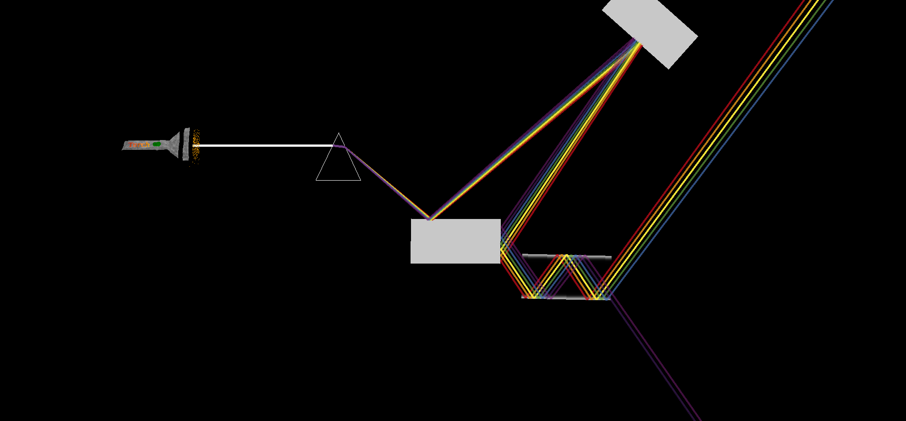
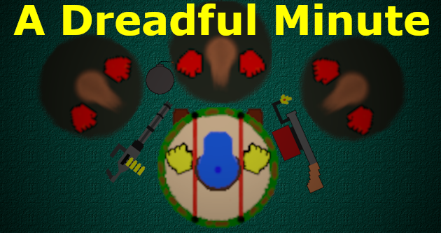
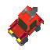
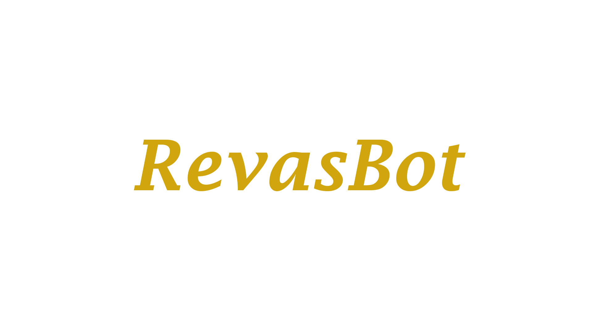
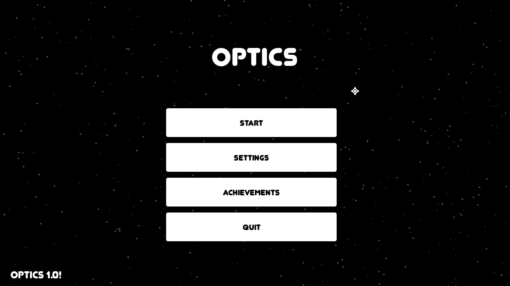

Jestem ambitnym pasjonatem informatyki, rozwijającym się w różnych dziedzinach IT, między innymi w: programowaniu, analizie danych oraz obsługiwaniu różnych systemów operacyjnych.
Liceum
III LO w Gdańsku
Klasa
Mat-Inf z angielskim na poziomie dwujęzycznym
Zainteresowania
Programowanie, Alogrytmika, Matematyka, Komputery, Systemy Operacyjne
Języki
Polski, Angielski - C1, Python
Umiejętnośc krytycznego myślenia
Analiza problemów, proponowanie usprawnień oraz implementowanie rozwiązań.
Doświadczenie w tworzeniu i współpracy nad dużymi projektami programistycznymi
Przykładowo: Optyka, Pixel Racers, A Dreadful Minute.
Motywacja do stałego rozwoju i nauki
Stale uczę się nowych rzeczy, od programowania w Pythonie i tworzenia stron internetowych po pracę z bazami danych oraz narzędziami do analizy danych, ciągle staram rozszerzyć swoje kompetencję informatyczne.
Mam za sobą 5 lat edukacji za granicą, które ukształtowały moje podejście do pracy i nauki. Japonia nauczyła mnie pracowitości, konsekwencji i perfekcjonizmu, a czas spędzony w Changchun w systemie IB otworzył mnie na świat i wzmocnił moje globalne ambicje.




WAŻNE! LOGIN DO DEMONSTRACJI:
EMAIL:PG@PG.com
HASŁO: AplikacjaLukasza

Chcę rozwijać swoje umiejętności w obszarze IT na wyższym poziomie, zdobywać praktyczne doświadczenie i poszerzać wiedzę w zakresie nowych technologii. Planuję aktywnie uczestniczyć w kołach naukowych (szczególnie w kółku Vertex) oraz projektach zespołowych, aby lepiej przygotować się do przyszłej pracy w branży i stale podnosić swoje kompetencje.
Stypendium pozwoli mi skupić się na rozwoju umiejętności IT, dając więcej czasu na naukę, projekty oraz udział w kołach naukowych i dodatkowych kursach.